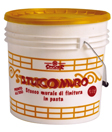
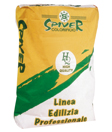

Штукатурка для отделки стен в виде пасты. Хорошо лодится и шлифуется. Готова к использованию.
Клей-паста для с изоляционными свойствами. Для определенных видов использования может быть смешанс с 25% цемента.
Армированный раствор с нормальным схватыванием. Обладает компенсированной усадкой, армированный волокнами с тиксотропным эффектом. Используется для восстановления поврежденных бетоных поверхностей.
Армированный раствор с нормальным схватыванием. Обладает компенсированной усадкой, армированный волокнами с тиксотропным эффектом. Используется для восстановления поврежденных бетоных поверхностей.
Цементный раствор с отличными механическими свойствами для сглаживания и выравнивания поврежденных поверхностей.
Эластичный двухкомпонентный раствор, который используется в качестве основания для восстановления штукатурки с микротрещинами, а также гидроизоляции бетонных резервуаров.
Антикоррозийный раствор подходящий для обработки арматур.